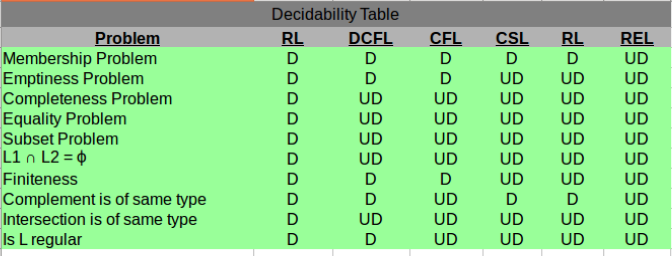

See Last Minute Notes on all subjects here.
We will discuss the important key points useful for GATE exams in summarized form. For details you may refer this.
Finite Automata: It is used to recognize patterns of specific type input. It is the most restricted type of automata which can accept only regular languages (languages which can be expressed by regular expression using OR (+), Concatenation (.), Kleene Closure(*) like a*b*, (a+b) etc.)
Deterministic FA and Non-Deterministic FA: In deterministic FA, there is only one move from every state on every input symbol but in Non-Deterministic FA, there can be zero or more than one move from one state for an input symbol.
Note:
- Language accepted by NDFA and DFA are same.
- Power of NDFA and DFA is same.
- No. of states in NDFA is less than or equal to no. of states in equivalent DFA.
- For NFA with n-states, in worst case, the maximum states possible in DFA is 2n
- Every NFA can be converted to corresponding DFA.
Identities of Regular Expression :
Φ + R = R + Φ = R
Φ * R = R * Φ = Φ
ε * R = R * ε = R
ε* = ε
Φ* = ε
ε + RR* = R*R + ε = R*(a+b)* = (a* + b*)* = (a* b*)* = (a* + b)* = (a + b*)* = a*(ba*)* = b*(ab*)*
Push Down Automata: Pushdown Automata has extra memory called stack which gives more power than Finite automata. It is used to recognize context free languages.
Deterministic and Non-Deterministic PDA: In deterministic PDA, there is only one move from every state on every input symbol but in Non-Deterministic PDA, there can be more than one move from one state for an input symbol.
Note:
- Power of NPDA is more than DPDA.
- It is not possible to convert every NPDA to corresponding DPDA.
- Language accepted by DPDA is subset of language accepted by NPDA.
- The languages accepted by DPDA are called DCFL (Deterministic Context Free Languages) which are subset of NCFL (Non Deterministic CFL) accepted by NPDA.
Linear Bound Automata: Linear Bound Automata has finite amount of memory called tape which can be used to recognize Context Sensitive Languages.
FA < PDA < LBA < TM
Turing Machine :Turing machine has infinite size tape and it is used to accept Recursive Enumerable Languages.
Deterministic and Non-Deterministic Turing Machines: In deterministic turing machine, there is only one move from every state on every input symbol but in Non-Deterministic turing machine, there can be more than one move from one state for an input symbol.
Note:
- Language accepted by NTM, multi-tape TM and DTM are same.
- Power of NTM, Multi-Tape TM and DTM is same.
- Every NTM can be converted to corresponding DTM.
Chomsky Classification of Languages:
| Grammar Type | Production Rules | Language Accepted | Automata | Closed Under |
| Type-3 (Regular Gramar) | A→a or A→aB where A,B ∈ N(non terminal) and a∈T(Terminal) | Regular | Finite Automata | Union, Intersection, Complementation, Concatenation, Kleene Closure |
| Type-2 (Context Free Grammar) |
A->ρ where A ∈N and ρ ∈ (T∪N)* |
Context Free | Push Down Automata | Union, Concatenation, Kleene Closure |
| Type-1 (Context Sensitive Grammar) | α→β where α, β∈ (T∪N)* and len(α) <= len(β) and α should contain atleast 1 non terminal. | Context Sensitive | Linear Bound Automata | Union, Intersection, Complementation, Concatenation, Kleene Closure |
| Type-0 (Recursive Enumerable) |
α → β where α, β∈ (T∪N)* and α contains atleast 1 non-terminal |
Recursive Enumerable | Turing Machine | Union, Intersection, Concatenation, Kleene Closure |
Relationship between these can be represented as:
{kind=link}
Decidable and Undecidable Problems:
A language is Decidable or Recursive if a Turing machine can be constructed which accepts the strings which are part of language and rejects others. e.g.; A number is prime or not is a decidable problem.
A language is Semi–Decidable or Recursive Enumerable if a turing machine can be constructed which accepts the strings which are part of language and it may loop forever for strings which are not part of language.
A problem is undecidable if we can’t construct an algorithms and Turing machine which can give yes or no answer. e.g.; Whether a CFG is ambiguous or not is undecidable.

Countability :